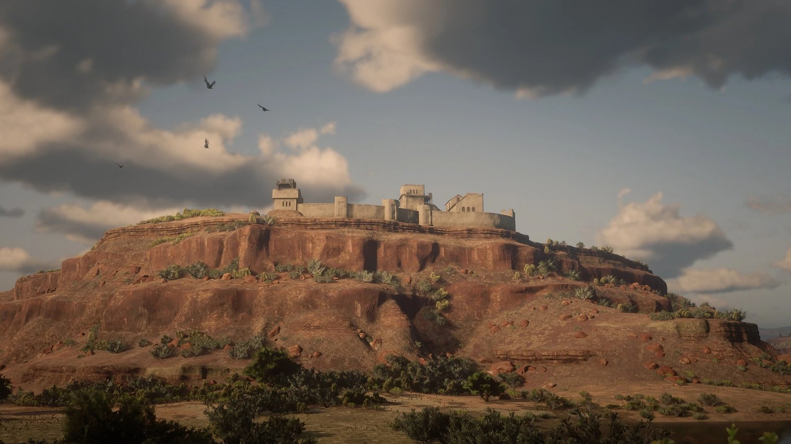
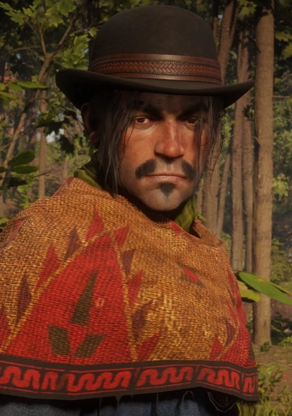
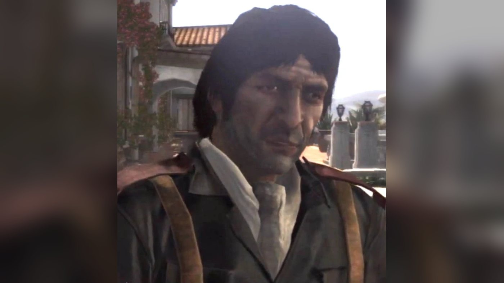
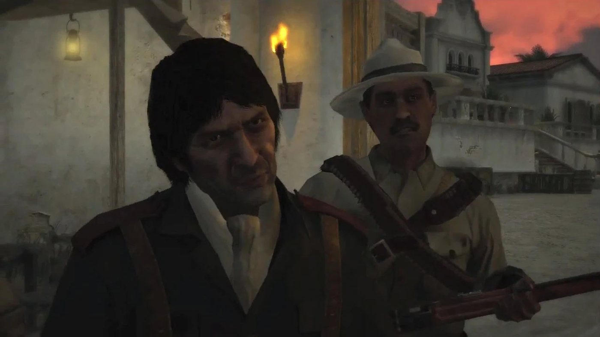
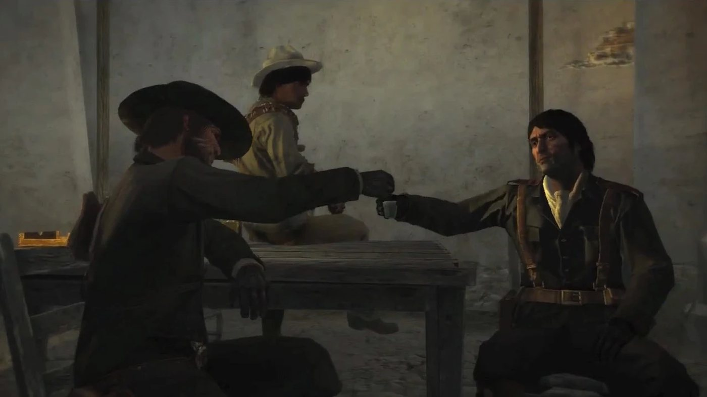
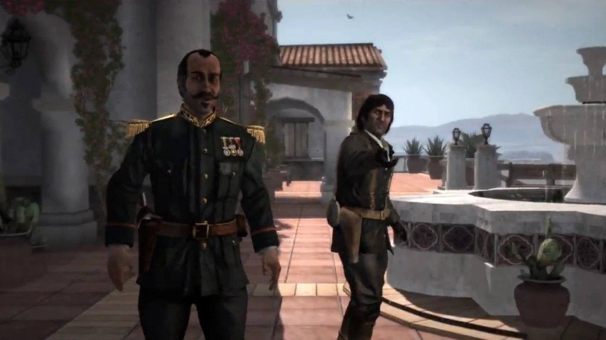
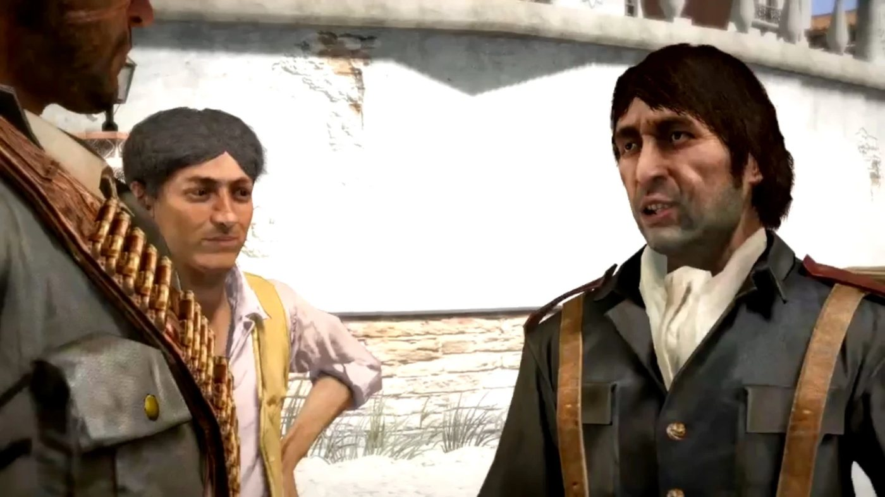
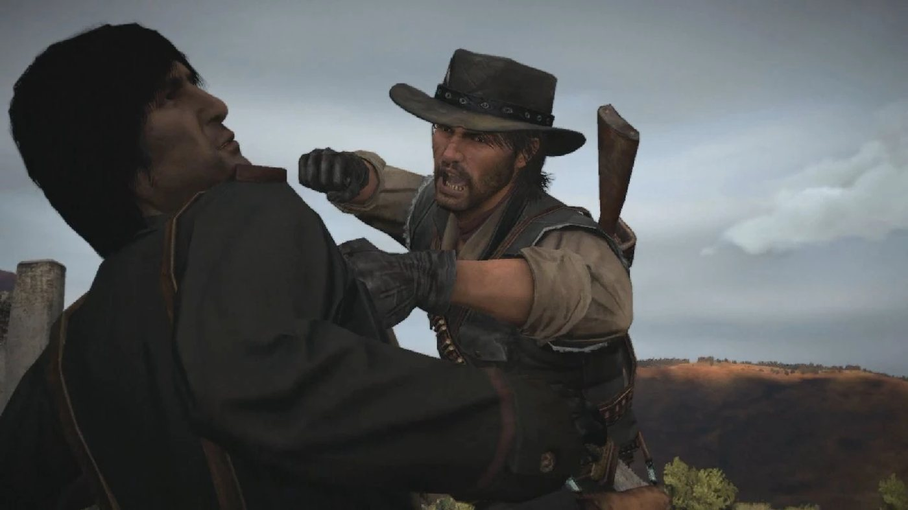
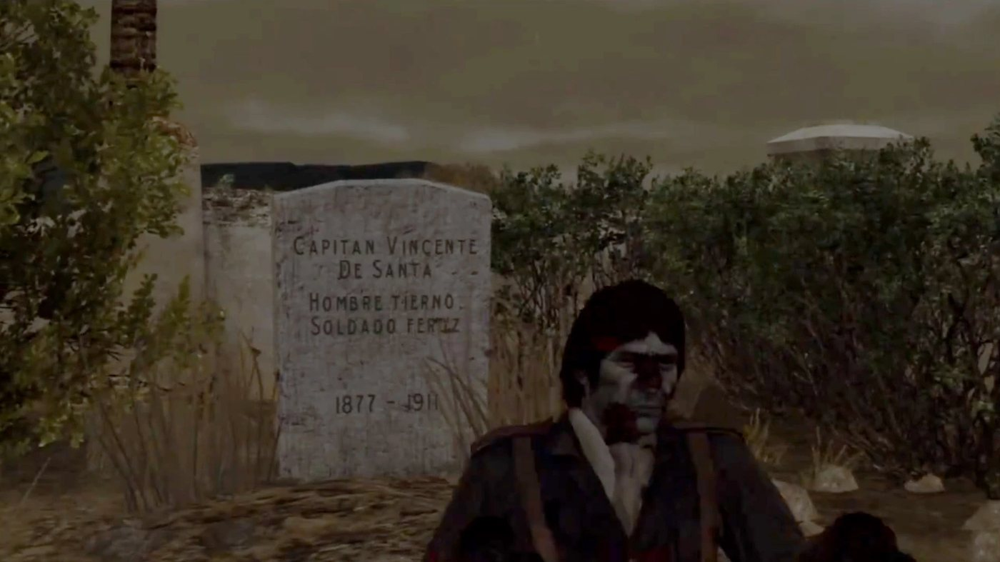

Character · Nuevo Paraiso
Vincente de Santa
Captain Vincente de Santa is an officer of the Mexican Army in Red Dead Redemption (2010), set in 1911. He serves Colonel Agustin Allende, governor of Nuevo Paraíso, in the war against the rebels of Abraham Reyes. When John Marston arrives in Escalera looking for Bill Williamson and Javier Escuella, De Santa takes him along against the rebels and promises that the colonel will help him in return. John then fights the rebels with his men on a decoy train escort, at Tesoro Azul and at Torquemada.
De Santa then leads John into a trap in Chuparosa, where Reyes's rebels save him from the firing squad. John catches up with him at Sepulcro, where he has been sent to oversee a massacre of rebels, and he dies there, shot by John or by the rebels. He is voiced by Hector Luis Bustamante.
- Name
- Vincente de Santa (Vicente in the Blackwater Ledger)
- Born
- 1877, according to his gravestone at Sepulcro, present when Undead Nightmare is installed (Red Dead Wiki); the Game of the Year Edition guide, quoted by the wiki, describes him as 33 years old
- Died
- 1911, at Sepulcro ("Captain De Santa's Downfall"), shot by John Marston or by Reyes's rebels depending on the player; the Blackwater Ledger gives his age as 34
- Nationality
- Mexican
- Occupation
- Captain in the Mexican Army, under Colonel Agustin Allende
- Based at
- Allende's mansion in Escalera, Punta Orgullo
- Family
- An unnamed father and mother
- Rival
- Captain Espinoza
- Enemies
- Abraham Reyes and his rebels, Luisa Fortuna, John Marston (after Chuparosa)
- Weapons and horse
- Cattleman Revolver, Repeater Carbine, Painted Quarter Horse (Red Dead Wiki)
- Games
- Red Dead Redemption; Undead Nightmare; multiplayer model (Myths and Mavericks)
- Voiced by
- Hector Luis Bustamante
Biography
Origins
The dialogue of Red Dead Redemption gives no birth date for Vincente de Santa. A gravestone added with Undead Nightmare gives one (see Undead Nightmare), and a newspaper notice gives his age at his death (see below). In 1911 he holds the rank of captain in the Mexican Army. He serves under Colonel Agustin Allende, the governor of Nuevo Paraíso, the Mexican province south of New Austin. He is based in Escalera, where Allende has his mansion. The province is at war: the rebels of Abraham Reyes are fighting the army across it.
According to the Red Dead Wiki, De Santa tells John Marston about his family in a conversation during "Civilization, at Any Price". He comes from a family of soldiers going back generations. His parents made him learn English for six years with an old woman from Milwaukee, telling him it would put the world in his hands. He resented them for it and says he has no use for the language. The wiki quotes another conversation, from "The Demon Drink": his father beat him often and called him a girl, and De Santa says he hated him for it but that it made him who he is. Neither exchange appears in the wiki's own transcripts of the two missions.
He gives other details himself in "Cowards Die Many Times", in the transcript of the mission. On the road to Chuparosa, John asks whether he is married, or whether he rapes young girls like his colonel. De Santa answers that he could never touch a woman like that and that it is not his way, and adds that for them it is an honor to please their leader. John then explains that his wife and child have been taken from him. De Santa says he is married to his country (see Personality) and that he never took a wife. He calls a woman a powerful force or a destructive force, and gives his mother as the example of both. He says he prefers to avoid women, because too many strong men become weak by giving in to the temptations of the flesh.
Red Dead Redemption (1911)
In 1911, agents of the Bureau of Investigation hold John Marston's wife and son to force him to hunt down his former companions Bill Williamson and Javier Escuella. At the end of the first act, John crosses into Nuevo Paraíso with Irish in "We Shall Be Together in Paradise", which opens the mission strand of De Santa. That strand has five missions, all starting in Escalera. De Santa also appears in a sixth mission, given by Luisa Fortuna, in which he dies.
Act II: Nuevo Paraíso
In "Civilization, at Any Price", John comes to Allende's manor in Escalera and asks to speak to the commander. De Santa meets him at the gate, asks whether he thinks he is too good to deal with a captain, and lets his soldiers point their guns at him. He then bursts out laughing, says it was a joke and welcomes John to Mexico. At an outdoor table, over tequila served by a waiter, he introduces himself as Captain Vincente de Santa. He tells John that his country is in pain because of the rebels, and praises Colonel Allende as a brave man trying to keep order in the province. When John names Bill Williamson and Javier Escuella, De Santa answers that outlaws may be hiding in the hills with the rebels, who are united under Abraham Reyes. He says his men are trying to lure Reyes into a trap, invites John to ride with them, and promises that the colonel will help him if all goes well.
John rides with him on the wagon to Chuparosa. On the way, De Santa says the army is going through a crisis of reputation, defends Allende against what John has heard, and argues that the peasants do not understand the words they are taught, such as tyrant and oppression. He calls the rebellion a disease and revolution selfish. John says he was a revolutionary once, in his own way, and that he is hunting the two men without pay because he is being made to do it. De Santa describes Reyes as a man from a rich family who pretends to fight for the poor and only gives speeches from a balcony. He then explains the plan: the army will escort a train out of Chuparosa, the rebels will take it for a supply train, and there will be no supplies on board.
The decoy works. John and De Santa ride beside the train while rebels attack it from both sides, and, according to the mission page, John fights off eight waves before it reaches Casa Madrugada. When the rebels retreat, De Santa tells John that he did a good thing for Mexico and that Colonel Allende will be very pleased. They spend the night in Casa Madrugada. Rebels then attack the guards and steal the train. De Santa shouts at his men in Spanish to get up and orders John to stop the train before it crosses the bridge. John kills the rebels on board and jumps onto the engine. According to the mission page, the bridge ahead is blown up, and John stops the train just before it.
"The Demon Drink" opens in Escalera with Allende berating De Santa in Spanish in front of John (see Relationships). De Santa introduces John to the colonel as the man who helped them defeat Reyes, a friend of Mexico. Allende sends John to Tesoro Azul, where De Santa's men are fighting rebels, and scolds De Santa again (see Relationships). On the ride, John criticizes the colonel. De Santa answers that it is easy to criticize power without ever having held it, and that Allende controls every situation. When John mentions the pressure to find young girls, he says the colonel needs recreation like anyone else. He then challenges John to a race. Close to the village, he tells John that the rebels will all die whether his men are dead or alive.
At Tesoro Azul, Captain Espinoza asks De Santa in Spanish why he took so long and who the gringo is. John and the soldiers kill the rebels in the village. Espinoza then says he heard girls crying in a house and reminds the men that nobody touches them before Allende. He tells John to burn the houses with fire bottles so that the rebels have no home to come back to. When John objects, De Santa reminds him that he wants to find Javier Escuella and tells him he is helping Mexico. John burns the houses.
In "Empty Promises", De Santa rides out of the manor gate with his men as John arrives, and calls on him to come because they have been betrayed. The rebels have taken Torquemada, an abandoned fort on the other side of the province, and the colonel's orders are to kill them all. John rides on De Santa's wagon. On the way, the wagon in front is blown up and rebels attack the convoy. At the army camp below the fort, De Santa and Espinoza trade insults in Spanish and English. De Santa tells John that Espinoza leads nothing and that he himself is in charge; Espinoza answers with an insult of his own (see Names), tells John to take a sniper rifle and leads the attack. The army takes the fort and the surviving rebels are executed.
After the battle, De Santa offers John fine women and wine as a reward. John answers that he needs information. De Santa puts him off until they are back in Escalera. John pokes him in the chest and warns him that he wants answers the next time they meet. De Santa laughs and tells him to go and enjoy life.
"Mexican Caesar" opens with De Santa and Quique Montemayor pushing two young women into the manor. One of them begs not to be forced. De Santa tells her in Spanish that nobody is forcing her and that she only has to encourage the man who will save her father. He tells John it is only a little recruitment and that their customs are none of his concern, then presents the women to Allende as two patriots. Allende asks him to explain the job to John. De Santa offers, on the colonel's behalf, 20,000 pesos and information on the whereabouts of Javier Escuella if John escorts a train through rebel country. John accepts, and De Santa tells him that Mexico loves him.
De Santa does not come along. John rides with Espinoza, who mocks his rival's absence (see Quotes). On the road, Espinoza notes that the convoy is made up of new recruits and that few soldiers were given for important supplies. He says the colonel told him that De Santa had praised his actions at Torquemada and called him a hero, and that the assignment was then requested for him; he wonders why, since De Santa hates him. On the train, he says the squad is made of new recruits and the two men De Santa hates most. Rebels attack the convoy and the train, and John holds them off with a Gatling gun until the army's base camp. There, John says he does not think De Santa expected them to come back. Espinoza asks whether John wants to kill De Santa or whether he should; John answers that De Santa is more use to him alive until he finds Escuella.
In "Cowards Die Many Times", De Santa brings John good news: the colonel wants to see him. Allende tells John that the two men he hunts have been captured in Chuparosa and tells De Santa to take care of him. On the wagon, John reminds De Santa of the trick with the munitions train; De Santa blames Espinoza and asks for his trust. He says the prisoners are held in the church and that his men have them surrounded. To pass the time, he organizes a shooting contest with his soldiers on the local wildlife, with 25 dollars for the winner of each round. He calls Reyes a coward who writes poems about battles he never fought. When John brings up the 20,000 pesos he was promised for what he calls a suicide mission with Espinoza, De Santa answers that John has been busy and has built a reputation, and that his actions will not be forgotten.
In Chuparosa, De Santa sends John into the church and says he is right behind him. He tells John that the prisoners are unarmed and that it will be like lambs to the slaughter. The church is empty. De Santa thanks John for his service to the land and laughs, and a soldier knocks John out with the butt of his rifle. John comes to as his head is plunged into a horse trough. De Santa has him lifted up, tells him that he has betrayed this land enough and that he is about to meet God. Reyes and his rebels attack the town at that moment, and Reyes kills the man about to execute John. Reyes cuts John's ropes, John recovers his weapons and kills Captain Espinoza in the town hall. Bill and Javier are nowhere to be found. The transcripts do not show who gave the order to kill John; according to the Red Dead Wiki, Allende had ordered De Santa to do it. De Santa survives the battle; according to the Red Dead Wiki, he escapes during the fighting.
In "Captain De Santa's Downfall", Luisa Fortuna meets John at the rebels' camp (Campo Mirada, according to the mission page). She tells him that De Santa has been sent to oversee a massacre at El Sepulcro, a cemetery east of Las Hermanas, and asks him to go with her men to kill him. On the ride, the rebel Victor speaks of the convoy John destroyed at the bridge and says the army is getting weaker. Before the attack, John tells the rebels to hold their fire until he moves and to leave De Santa to him, because he needs him alive. At the cemetery, De Santa has a rebel dig his own grave. He condemns the man to death for treason in Spanish, in the name of Colonel Allende's government, asks for his last words and shoots him in the head.
John and the rebels kill the soldiers. De Santa tries to flee on foot, and John has to hogtie him and carry him back to the cemetery entrance, according to the mission's objectives. John beats him to make him talk. De Santa first insults him and tells him to go back to his country, then gives in: he says that Javier Escuella is holed up in Casa Madrugada, and tells John to kill him or let him go. John spits on him. Victor asks whether the rebels can kill him or whether John wants to do it himself. The player chooses.
If John shoots De Santa himself, John tells him that they are now even. Victor cheers for Reyes and says he is glad it was John, and John answers that some things a man has to finish himself. If John leaves him to the rebels, they shoot him. Victor thanks John but says John really should have done it himself, and John answers that he does not like to kill a man on his knees, even one who deserved it. In both versions, De Santa dies at Sepulcro in 1911. Victor then says De Santa was responsible for hundreds of innocent deaths, perhaps thousands, and that with Espinoza and De Santa dead, the army has no leaders. At Casa Madrugada, soldiers are waiting and attack John. A woman tells him afterwards that Javier has not been seen there in months, and mocks him for believing De Santa.
Reyes learns of the death at the start of "The Gates of El Presidio", and his lines depend on the player's choice. If John killed De Santa, Reyes says he is happy it was John's bullet after Chuparosa; John answers that he was not going to give De Santa a second chance to kill him, and that he was hardly worth a bullet. If the rebels killed him, Reyes asks why John did not do it when his men gave him the chance. John answers that the rebels wanted it more than he did, and that De Santa had given him what he needed, or so he thought. In that version only, Reyes adds that many young boys will now sleep more safely in their beds, and John replies that De Santa was only following orders, a dumb and loyal servant of an awful master (see Quotes).
The Blackwater Ledger reports his death in issue No. 58, on sale after "An Appointed Time", the last mission of the second act. A short notice in its Miscellany section reads: "Captain Vicente De Santa of the Mexican Army has been reported deceased, age 34 years." The main article of the same issue reports the death of Allende.
Undead Nightmare (non-canon)
Undead Nightmare, an expansion released in 2010, is not part of the series' canon. In "Mother Superior Blues", the Mother Superior of Las Hermanas asks John to cleanse the cemetery of Sepulcro of the undead. John burns the coffins and kills the undead. Once most of the undead are down, De Santa climbs out of his grave and has to be fought last. According to the Red Dead Wiki, he mumbles, in a distorted voice, that Mexico loves Mr. Marston. The player has to put him down; the character page says he can be killed or hogtied, and the mission page advises a quick headshot.
His grave is in Sepulcro. The Red Dead Wiki's page on the cemetery lists it as "Captain Vincente De Santa / Tender man / Fierce soldier / 1877-1911". According to the wiki's character page, the tombstone reads "Hombre Tierno, Soldado Feroz" in Undead Nightmare. The wiki says the gravestone is also visible in the standard game once Undead Nightmare is installed.
Personality
The Red Dead Wiki quotes the Game of the Year Edition guide of Red Dead Redemption: "A 33-year-old military man. He is Allende's man on the ground. Ambitious and unprincipled, Vincente knows that he is fighting a war that he must win because the rebels have put a price on his head. He will do anything and kill anyone. He also has been tasked with procuring young women for his boss."
In the transcripts, he mixes Spanish into his English and calls John amigo, compadre or my friend. He defends Colonel Allende each time John criticizes him. He calls the rebels traitors, pigs and rats, and describes the peasants as people who can be herded. He blames the poor for their poverty.
In his own words
On Allende's rule, at their first meeting in "Civilization, at Any Price": "Sometimes in the service of what is right, you got to do terrible things. It breaks my heart." On the rebellion, in the same mission: "Revolution is always selfish. It is nothing but greed and ego." When John says his old friends belong to a past he cannot shake off: "The past is all that's real, my friend. It cannot be erased." On the road to Chuparosa in "Cowards Die Many Times": "I am married to my country and these rebel traitors, they are trying to take it from me."
Names
He introduces himself to John as Capitán Vincente de Santa. John, Reyes and the rebels call him De Santa or Captain De Santa. The Red Dead Wiki and Hector Luis Bustamante's filmography on Wikipedia spell his first name Vincente. The notice of his death in the Blackwater Ledger spells it Vicente, as do the Spanish-language Red Dead Wiki and Javier Aldape's 2022 study of the game (see Reception). Captain Espinoza calls him "office boy" in "Empty Promises" and "that pathetic little errand boy" in "Mexican Caesar". Allende insults him in Spanish in front of John: llorón (crybaby) and maricón in "The Demon Drink", mariconcito in "Mexican Caesar", the last two being homophobic slurs.
Appearance
He is a clean-shaven man in his thirties, with dark hair cut in a fringe and falling to the back of the neck. He wears a dark army tunic with burgundy shoulder patches, a white cravat and two brown leather straps over the shoulders. According to the Red Dead Wiki, he has a lazy eye, less visible than Eli's.
Relationships

Agustin Allende
His colonel, the governor of Nuevo Paraíso. De Santa presents him to John as a good and strong man who carries the weight of a million problems. Allende insults him in Spanish in front of John (see Names). At the start of "The Demon Drink", he also tells him that he talks of loyalty but is transparent, and that he will be applauding when Allende's head is impaled. In the same scene, he orders him not to stand behind him and tells him he is not his shadow.
De Santa brings young women to the mansion for him and defends him when John raises the subject (see Biography). At Sepulcro, he condemns a rebel to death in the name of Colonel Allende's government (see Biography). Both men are reported dead in the same issue of the Blackwater Ledger (see Biography).

John Marston
De Santa is John's first contact with the army in Nuevo Paraíso and sends him on every mission of his strand, promising that the colonel will find Bill and Javier in return (see Biography). On their first ride, in "Civilization, at Any Price", De Santa asks how much the bounty on the two men is worth; John answers that he is not being paid and is being made to do it. On the road to Chuparosa, in "Cowards Die Many Times", De Santa asks why he hunts them; John first says it beats getting a real job, and only later says that his wife and child have been taken from him. In front of Allende, De Santa calls John a friend of Mexico. He betrays him in Chuparosa (see Biography).
At Sepulcro, John beats him until he names a hiding place for Javier, then kills him or leaves him to the rebels (see Biography). If the rebels killed him, John later tells Reyes that De Santa was only a dull, faithful servant who followed orders (see Quotes).

Abraham Reyes
The rebel leader De Santa is fighting. On their first ride to Chuparosa, De Santa insults him at length (see Quotes), calls him a man born in a golden cradle who pretends to fight for the poor, and says that Reyes only makes speeches from a balcony. In "Cowards Die Many Times", he calls him a coward who writes poems and songs about battles he never fought. Reyes's rebels save John from De Santa's firing squad in Chuparosa (see Biography).
When John tells Reyes, in "Must a Savior Die?", that he is only after two men, Reyes jokes that John has been spending too much time with De Santa (see Quotes), and John replies that he did not mean it that way. Reyes welcomes De Santa's death at the start of "The Gates of El Presidio" (see Biography).

Bill Williamson
One of the two outlaws John is hunting. De Santa asks about "Billy the cowboy and his Mexican friend" on their first ride. In "Cowards Die Many Times", he leads John to Chuparosa on the pretext that Bill and Javier have been captured there (see Biography).

Javier Escuella
In "Mexican Caesar", De Santa offers John, on the colonel's behalf, information on Javier's whereabouts (see Biography). At Sepulcro, beaten by John, he names Casa Madrugada as Javier's hiding place; soldiers are waiting there instead (see Biography).

Luisa Fortuna
Luisa learns that De Santa has been sent to oversee a massacre at Sepulcro and asks John to ride there with her men and kill him and Allende's other followers (see Biography). She calls him an animal and vermin, and stays behind at the rebel camp.
Espinoza
A fellow army captain and his rival. When John asks whether they share the same rank, De Santa says Espinoza leads nothing and calls him an angry dog the army lets out from time to time; at Torquemada he tells John to ignore that stupid ape. Espinoza, for his part, mocks him with the names given under Names. In "Mexican Caesar", he tells John that De Santa licks the colonel's boots, plays with his waiter friend and flirts with barmen, and that he never saw him fight at Torquemada. In the same mission, he claims to be Allende's right arm himself, and says the colonel needs a maid, a woman he cannot sleep with, and that De Santa is that woman.
During the same escort, he tells John that the squad includes the two men De Santa hates most, and later asks him whether he should kill De Santa himself (see Quotes). In "Cowards Die Many Times", De Santa blames Espinoza for that escort. John kills Espinoza in Chuparosa (see Biography).
Quique Montemayor
A waiter at Allende's mansion in Escalera; the Red Dead Wiki says he works for De Santa and identifies him as the waiter who brings De Santa his tequila in "Civilization, at Any Price". In "Mexican Caesar", he helps De Santa push two young women into the mansion and insults them in Spanish (see Biography). Espinoza's remarks about the waiter are under the Espinoza entry; a published reading of these scenes is under Reception.
Victor Melendez
The rebel who leads John to Sepulcro on Luisa's orders. After the interrogation, he asks John who should kill De Santa. His reactions to each outcome are told under Biography and quoted under Quotes.
His parents
Neither is named in the game. What he says of his upbringing and of his mother is told under Biography (Origins).
Herbert Moon
The Armadillo shopkeeper names him among the Mexican leaders he lumps together, in a line quoted on the Red Dead Wiki's Herbert Moon page (see Quotes).
Weapons, horse and gameplay
The Red Dead Wiki lists a Cattleman Revolver and a Repeater Carbine as his weapons, and a Painted Quarter Horse as his mount; the French-language wiki gives him a Volcanic Pistol. In "The Demon Drink", he challenges John to a race to Tesoro Azul, which is one of the mission's objectives. In "Cowards Die Many Times", he runs a shooting contest on the wagon ride to Chuparosa: each man gets five shots at the local wildlife, and he promises 25 dollars to whoever kills the most. According to the mission page, the contest starts when John shoots an animal and can be won three times (the reward is in the Missions table).
In "Civilization, at Any Price", "The Demon Drink", "Empty Promises" and the first part of "Cowards Die Many Times" (before John enters the church), the mission fails if John assaults, kills or abandons him. "Captain De Santa's Downfall" fails if he is killed before he is captured and made to talk. At Sepulcro, John must kill his soldiers without hitting him and take him alive (see Biography). According to the mission page, he runs slowly and can steal John's horse; a rider who cuts him off can herd him back like cattle. He may shoot at John; when he is close to the rebels, he fights them and ignores John. He draws a new revolver or rifle each time he is disarmed. If John starts a fistfight with him after the interrogation, the rebels shoot him, and the following dialogue plays as if John had killed him. The Red Dead Wiki adds that killing him counts as a civilian kill.
Missions
De Santa appears in six story missions of Red Dead Redemption, all in the second act, set in Nuevo Paraíso, and in one mission of Undead Nightmare. He gives the five missions of his own strand, all of which begin in Escalera. The sixth, in which he dies, belongs to the strand of Luisa Fortuna. Abraham Reyes mentions him in two other missions of the act.
Appearances
| Mission | Act | De Santa's role |
|---|---|---|
| Civilization, at Any Price | Act II: Nuevo Paraíso | Mission giver. Meets John Marston at the manor in Escalera and has him escort a decoy train out of Chuparosa. 26th mission. Rewards: 50 dollars and 250 fame; unlocks the Luisa Fortuna strand and the stranger mission "Poppycock". |
| The Demon Drink | Act II: Nuevo Paraíso | Mission giver. Introduces John to Agustin Allende and races him to Tesoro Azul, where the village is cleared and burned. 27th mission. Rewards: 50 dollars, a Fire Bottle and 350 fame; the Tesoro Azul hideout becomes available. |
| Empty Promises | Act II: Nuevo Paraíso | Mission giver. Takes John on his wagon to the rebel-held fort of Torquemada, then puts off his questions. 28th mission. Rewards: 100 dollars, a Rolling Block Rifle (gift) and 300 fame; unlocks the stranger missions "Love is the Opiate" and "Funny Man" (part 4). |
| Mexican Caesar | Act II: Nuevo Paraíso | Mission giver. Brings two women to Allende and offers John 20,000 pesos and information on Javier Escuella to escort an army train; stays behind while John rides with Espinoza. 29th mission. Rewards: 75 dollars and 200 fame; dynamite goes on sale and Butter Bridge is rebuilt. |
| Cowards Die Many Times | Act II: Nuevo Paraíso | Mission giver. Takes John to Chuparosa on the pretext that Bill and Javier are held in the church, holds a shooting contest on the way, then has him knocked out and set before a firing squad. 36th mission; also requires "Must a Savior Die?". Rewards: up to 75 dollars from the contest, 50 honor and 250 fame; unlocks the Reyes strand and "Father Abraham". |
| Captain De Santa's Downfall | Act II: Nuevo Paraíso | Target. Executes a rebel at Sepulcro, is hogtied and beaten by John, names Casa Madrugada, and is shot by John or by the rebels (player's choice). 39th mission, given by Luisa Fortuna, from Campo Mirada to Casa Madrugada. Rewards: 125 honor and 300 fame. |
| Mother Superior Blues | Undead Nightmare | Rises from his grave as the undead boss of the Sepulcro cemetery. Mission given by the Mother Superior of Las Hermanas. Reward: Holy Water. |
Missions in which he is mentioned
| Mission | Act | Link with De Santa |
|---|---|---|
| Must a Savior Die? | Act II: Nuevo Paraíso | Freed by John at El Presidio, Reyes jokes that John has been spending too much time with Captain De Santa (see Quotes). 35th mission, given by Luisa. |
| The Gates of El Presidio | Act II: Nuevo Paraíso | Reyes has heard of De Santa's death at Sepulcro; his lines and John's answers differ depending on who shot him (see Biography). 40th mission, given by Reyes. |
Quotes
The lines below are given in the original English. Mission lines are checked against the mission transcripts of the Red Dead Wiki. The lines with no transcript, the multiplayer lines and Herbert Moon's line come from the wiki's quote lists.
Red Dead Redemption, Act II
I am the government, or what is left of it.
Civilization, at Any Price (RDR1, Act II), at the table outside the manor in Escalera, when John asks for the governmentMarston: Where can I find this Reyes? / Vincente: If I knew I would be there, hunting him with everything that is true within me. Reyes finds you. / Marston: Like cholera. / Vincente: Something like that.
Civilization, at Any Price (RDR1, Act II), at the table outside the manor in EscaleraThis isn't America, Señor Marston. We are poor. Kindness must take a different form. What is better, to put your arm around a hungry man, or to beat him until he grows some food to eat?
Civilization, at Any Price (RDR1, Act II), on the wagon to ChuparosaVincente: Are you a revolutionary? Is that why you are here? / Marston: I was once, I suppose, in a twisted kind of way. Thought I could change something if I fought hard enough. / Vincente: Change what? / Marston: I don't know. Maybe that was the problem.
Civilization, at Any Price (RDR1, Act II), on the same rideMarston: Who is this man we're looking for, the leader of the rebels? / Vincente: Abraham Reyes? He is a traitor, a liar, a coward and a sinner. A hero who has done nothing. I have more respect for the shit I took this morning than I ever will for that pathetic worm.
Civilization, at Any Price (RDR1, Act II), later on the same rideMarston: So I finally met your great leader. He certainly lives up to his reputation. / Vincente: What would you know about leadership? / Marston: Only that most can't handle power. / Vincente: It is easy to criticize power, when you have never had it yourself.
The Demon Drink (RDR1, Act II), on the ride to Tesoro Azul, after the meeting with AllendeMarston: Look, I don't know the fella. Just sayin'...if that's how he treats his own men? / Vincente: Colonel Allende controls any situation he is in because he knows the situation can never be allowed to control him. It is what a leader must do.
The Demon Drink (RDR1, Act II), on the same rideMarston: Was he that deranged captain at Tesoro Azul? Is he leadin' this attack? / De Santa: Leading? Espinoza does not lead anything! / Marston: I thought you was the same rank? / De Santa: He is an angry dog we let out to run sometimes. That is all. I'm in charge here.
Empty Promises (RDR1, Act II), at the army camp below TorquemadaGo get drunk! Go get a woman! Enjoy life! It is a beautiful struggle!
Empty Promises (RDR1, Act II), laughing, after John pokes him in the chest and demands answersMarston: What's going on here, Captain De Santa? / Vincente: Just a little recruitment. Nothing for you to be concerned about. / Marston: You boys using women soldiers now? / Vincente: Our customs are none of your concern. / Marston: Apparently not.
Mexican Caesar (RDR1, Act II), as De Santa and Quique Montemayor bring two young women to the manorMarston: Like the 20,000 pesos you promised, when you sent me on a suicide mission with Espinoza? / De Santa: Yes, it has been a busy time for you in Mexico. / Marston: What do you mean? / De Santa: I mean, you have built quite a reputation for yourself.
Cowards Die Many Times (RDR1, Act II), on the wagon to Chuparosa, after De Santa promises that his men have the prisoners surroundedMarston: Why are they in the church? / De Santa: It is as good a place, as any, to judge a man, wouldn't you say? / Marston: Are they armed? / De Santa: No, they are prisoners. Take a deep breath. Calm yourself, it will be like lambs to the slaughter.
Cowards Die Many Times (RDR1, Act II), on arriving in ChuparosaMarston. Hey! Marston. You have betrayed this land enough. I hope you have a clear conscience, 'cause you are about to meet God.
Cowards Die Many Times (RDR1, Act II), after John is pulled out of the horse troughVincente: You fucking pig! Go back to your country. / Marston: Where is Javier Escuella? / Vincente: Wait, wait, wait. Okay. Alright! Alright... Shit... Alright. Casa Madrugada. He's holed up there. Hurry up and kill me or just let me go. Okay?
Captain De Santa's Downfall (RDR1, Act II), as John beats him at the entrance of the Sepulcro cemetery
What others say about him
Marston: Why didn't De Santa come with us? / Espinoza: Why do you think? Because he is hardly a soldier. I'm sure has other important business, like mailing letters or sweeping floors or flirting with barmen.
Captain Espinoza, Mexican Caesar (RDR1, Act II), on the road to ChuparosaWe have already been ambushed. Our squad is made up of new recruits and the two men De Santa hates the most. I think it is right to be anxious.
Captain Espinoza, Mexican Caesar (RDR1, Act II), on the train, after John calls him anxiousMarston: I don't think De Santa expected us to come back from this. / Espinoza: Did you want to kill him, or should I? / Marston: No, until I find Escuella, he's more use to me alive.
Mexican Caesar (RDR1, Act II), at the end of the train escortMarston: I'm here for two men, and that's it. / Abraham: You have been spending too much time with Captain de Santa. / Marston: Very funny. Not like that. I'll explain later.
Abraham Reyes, Must a Savior Die? (RDR1, Act II), after Reyes offers John money, women or Luisa as a rewardCan we kill this piece of shit now, señor, or would you like the pleasure yourself?
Victor, Captain De Santa's Downfall (RDR1, Act II), after De Santa names Casa MadrugadaMarston: Now we're even, Captain. / Victor: Sí! Viva Abraham Reyes! It is done. Come on, now we find your friend. I am glad it was you, compadre. / Marston: There's some things you gotta finish yourself.
Captain De Santa's Downfall (RDR1, Act II), if John kills De Santa himselfMarston: He's all yours, fellas. I got what I need. / Victor: Esto es para Mexico! It is done. Come on, now we find your friend. Thank you, compadre. It really should have been you. / Marston: I don't like to kill a man on his knees, even if he did deserve it.
Captain De Santa's Downfall (RDR1, Act II), if John leaves De Santa to the rebelsVictor: That man is responsible for hundreds of innocent deaths, maybe even thousands. He will burn in hell. / Marston: We all will, my friend.
Captain De Santa's Downfall (RDR1, Act II), after De Santa's death, in both versions of the player's choiceMarston: I don't blame you. But Captain De Santa said he was here. / Woman: And you believed him? You must be more stupid than you look. Go shoot up some place else.
A woman of Casa Madrugada, Captain De Santa's Downfall (RDR1, Act II), after the army ambushAbraham: I am happy it was your bullet, John, after what he did to you in Chuparosa. / Marston: I wasn't goin' to give him a second chance to kill me. / Abraham: It must have felt good. / Marston: Not particularly. He was hardly worth a bullet.
The Gates of El Presidio (RDR1, Act II), on the wagon, if John killed De Santa himselfAbraham: But why did you not kill him yourself, when my men gave you the chance? / Marston: I could see they wanted it more than I did. De Santa had given me what I needed, or I thought he had. / Abraham: A lot of young boys will sleep safer in their beds now. / Marston: De Santa was only following orders. He was dumb and loyal to his awful master, but that's all he was.
The Gates of El Presidio (RDR1, Act II), on the wagon, if the rebels killed De Santa (these lines exist only in that version)Sanchez, Allende, De Santa, Reyes; all the same! They just want Armadillo rail rides.
Herbert Moon, the Armadillo shopkeeper, about the railroads in Mexico (quote list of the wiki's Herbert Moon page)
Lines from the wiki's quote list
When I put on this uniform I swore a sacred oath to protect the country I love. And I will protect her, from threats external and internal. I will fight to my last breath to stop this rebellion. One day soon I will be a general.
Attributed to "Civilization, at Any Price" by the quote list of the wiki; not in the wiki's transcript of the missionSometimes we must be brutal to be kind. It is what men do.
Attributed to "The Demon Drink" by the quote list of the wiki; not in the wiki's transcript of the missionMy friend, I bleed red, white and green. I love my God and country, before I love myself. These rebels, they fight because they are selfish. They have lost their patriotism and it disgusts me.
Attributed to "The Demon Drink" by the quote list of the wiki; not in the wiki's transcript of the missionYou are the better man.
Red Dead Redemption, when injured (quote list of the wiki; no transcript)Please, I am begging you.
Red Dead Redemption, when injured (quote list of the wiki; no transcript)If you kill me I will sent the entire Mexican Army after you.
Red Dead Redemption, threatening John (quote list of the wiki, spelling as given there; no transcript)Marston ya hijo de puta!
Red Dead Redemption, in Spanish (quote list of the wiki; no transcript). Translation given by the wiki: "Marston you son of a bitch!"
Red Dead Redemption multiplayer
Tu fin ha llegado, ¡Pendejo!
Red Dead Redemption multiplayer, in Spanish (quote list of the wiki). Translation: "Your end has come, asshole!"No sabes con quién estás tratando.
Red Dead Redemption multiplayer, in Spanish (quote list of the wiki). Translation: "You don't know who you're dealing with."¡Van todos al infierno!
Red Dead Redemption multiplayer, in Spanish (quote list of the wiki). Translation: "You all go to hell!"Ríndanse!
Red Dead Redemption multiplayer, in Spanish (quote list of the wiki). Translation: "Give up!"Eres mío, ¡Hijo de puta!
Red Dead Redemption multiplayer, in Spanish (quote list of the wiki). Translation: "You're mine, son of a bitch!"Estás muerto!
Red Dead Redemption multiplayer, in Spanish (quote list of the wiki). Translation: "You're dead!"¡Ya basta cabrón!
Red Dead Redemption multiplayer, in Spanish (quote list of the wiki). Translation: "Stop it, you bastard!"¡Te voy a hacer pedazos!
Red Dead Redemption multiplayer, in Spanish (quote list of the wiki). Translation: "I will smash you to pieces!"
Development and performance
Casting
Captain De Santa appears in Red Dead Redemption and in its expansion Undead Nightmare, both released in 2010. The Red Dead Wiki credits Hector Luis Bustamante as his voice, and the Wikipedia article on the actor lists the role, as "Captain Vincente De Santa", in both games. According to Wikipedia, Bustamante is a Colombian-American actor, born Héctor Luis Bustamante Durango in Medellín, whose family moved to the United States when he was 12; the Red Dead Wiki gives his date of birth as March 12, 1972. His television and film roles include the series The Shield and the film Hostage (2005). He won the 2009 Imagen Award for outstanding lead actor in a made-for-television movie, and Wikipedia names Little Girl Lost: The Delimar Vera Story (Lifetime Movie Network, 2008) as his best-known performance.
No interview in which Bustamante discusses Red Dead Redemption was found. No source consulted names a performer for De Santa's motion capture, and Wikipedia's article on the game does not mention the character. The Red Dead Wiki's page on the game's cut content lists nothing about him.
Reception
Villain rankings
De Santa does not have an entry in "Red Dead Redemption: Every Villain Ranked From Worst To Best", published by WhatCulture on February 7, 2022. In the entry on Allende, ranked 13th, Matt Thompson writes that "his underling, Captain Vincente de Santa has more of a character evolution after the betrayal", and regrets that the colonel was not given the same depth.
LGBTQ Video Game Archive
The LGBTQ Video Game Archive, a research project led by Adrienne Shaw of Temple University, published an entry titled "Quique Montemayor and Captain Vincente de Santa in Red Dead Redemption" on June 24, 2016. It files the entry under the tags Bisexual, Bisexual (implicit), Gay, Gay (implicit) and Queer Men. The entry says that the two men seem to be "openly in an intimate relationship", that many of the game's major characters comment on it, and that De Santa also flirts with women. It quotes, without naming the speaker, Reyes's line on young boys sleeping safely after De Santa's death, and the word mariconcito. Its listed sources are two Red Dead Wiki pages, a 2013 blog post and a 2010 IGN forum thread.
Academic study
In "The Mustang Diaries: A Study of Mexico in Red Dead Redemption 1", published in the Revista Panamericana de Comunicación (vol. 4, no. 2, 2022), Javier Aldape, of Texas A&M University, mentions him once, as "one of his subordinates, Captain Vicente De Santa", who tells John that Colonel Allende knows where Bill Williamson and Javier Escuella are.
Other media and legacy
Multiplayer
De Santa became a playable character model in the multiplayer mode of Red Dead Redemption with the Myths and Mavericks Bonus Pack. According to the Red Dead Wiki, Rockstar first hinted at this free pack on June 6, 2011, set a September release on July 27 and gave the date and contents on September 1. It was released free on September 13, 2011 on PlayStation 3 and Xbox 360; according to the same wiki, it was the last downloadable content released for the game. It added eight characters to the Revolution section of the Outfitter: Drew MacFarlane, Eli, Javier Escuella, Jonah, Landon Ricketts, Nastas, Uncle and De Santa. His multiplayer lines are in Spanish (see Quotes).
According to its caption on the wiki, a promotional image of the pack shows De Santa in a Stronghold match at Torquemada with Javier Escuella, Drew MacFarlane and Eli. The versions of Red Dead Redemption released on PlayStation 4 and Nintendo Switch on August 17, 2023, then on PC on October 29, 2024, contain the story and Undead Nightmare but not the multiplayer mode, so the De Santa model is not available in them.
Later games
De Santa does not appear in Red Dead Redemption 2 or in Red Dead Online. The Red Dead Wiki lists him only in Red Dead Redemption and Undead Nightmare.
Trivia
- According to the mission page of "Civilization, at Any Price", the player can climb onto the train during the escort. De Santa then shouts at John to get off, but the mission does not fail, and he eventually stops.
- According to the mission page of "The Demon Drink", if the player disarms Espinoza during the shootout at Tesoro Azul, Espinoza asks: "Did De Santa make you do this?"
- According to the mission page of "The Gates of El Presidio", when the mission is replayed, Reyes always speaks as if the rebels, not John, had killed De Santa.
- According to the Red Dead Wiki, when De Santa speaks of the colonel, the subtitles write "Coronel", the Spanish word, instead of "Colonel".
- The mission title "Cowards Die Many Times" comes from Caesar's line "Cowards die many times before their deaths" in Shakespeare's Julius Caesar (Act II, scene 2).
- De Santa shares his surname with Michael De Santa, one of the three playable characters of Grand Theft Auto V (Rockstar, 2013). In that game, De Santa is a false name: the character was born Michael Townley.
Gallery






